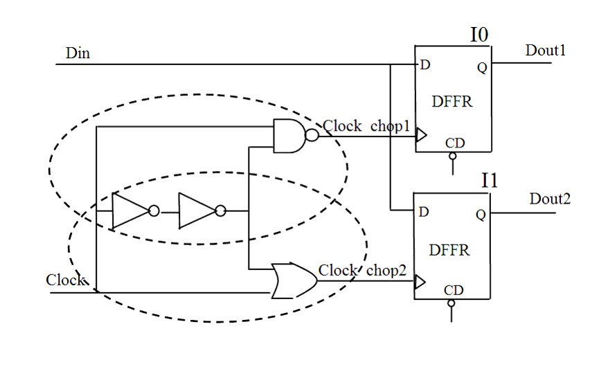

| Description | This rule detects structures that modify the clock waveform. As with all structures on the clock network, clock choppers/extenders must be used carefully. |
| Policy | DESIGN |
| Ruleset | CLOCKS |
| Language | VHDL/Verilog |
| Type | Hardware |
| Severity | Error |
This is an example of invalid Verilog code, followed by a circuit diagram that illustrates the problems:
module ntl_clk22_top (Clock, Reset, Din, Dout1, Dout2 ); input Clock, Reset, Din; output Dout1, Dout2; reg Dout1, Dout2; wire Clock_chop1, Clock_chop2; assign Clock_chop1 = !(!(!Clock) & Clock); // NTL_CLK22 fires -- chopper/extender Clock assign Clock_chop2 = !(!Clock) | Clock; // NTL_CLK22 fires -- chopper/extender Clock ... endmodule